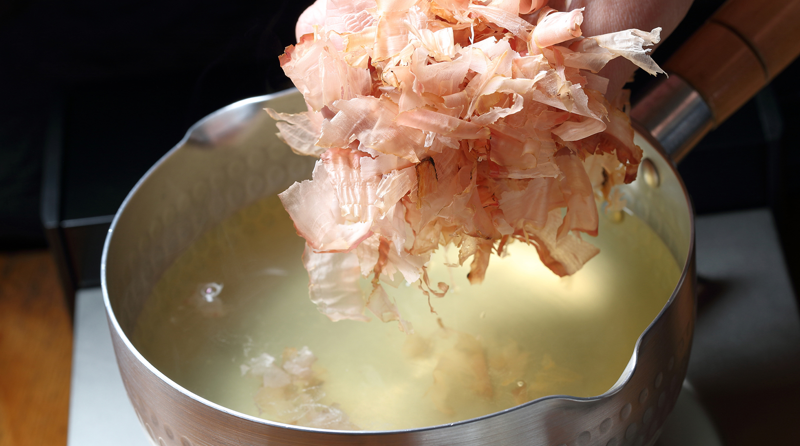

Dashi

Description
There may be no more important building block in all of Japanese cuisine than dashi. Dashi is an elegently simple stock that's essential to soups and sauces throughout Japan. While there are a number of variatons on the theme in this recipe we will be learning how to make awase dashi from bonito flakes and kombu kelp
Ingredients
- .5 oz bonito flakes
- .5 oz kombu kelp
- 4 cups of water
Instructions
- Clean the kombu and allow it to soak in the 4 cups of water overnight in the refridgerator.
- Transfer the kelp and water to a sauce pan.
- Warm over medium heat until small bubbles form and remove the kelp from the pot.
- Raise the heat and when the liquid begins to simmer add the bonito.
- Simmer the flakes untill they sink to the bottom of the pan.
- Strain the dashi through a sieve lined with cheesecloth or paper towel.
- You can use the dashi in your favorite recipe right away (I suggest our miso soup) or store for later use!